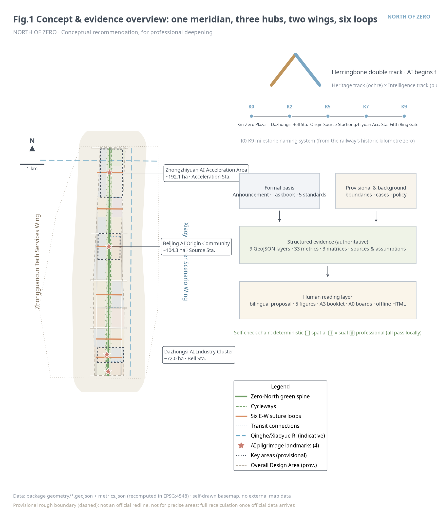
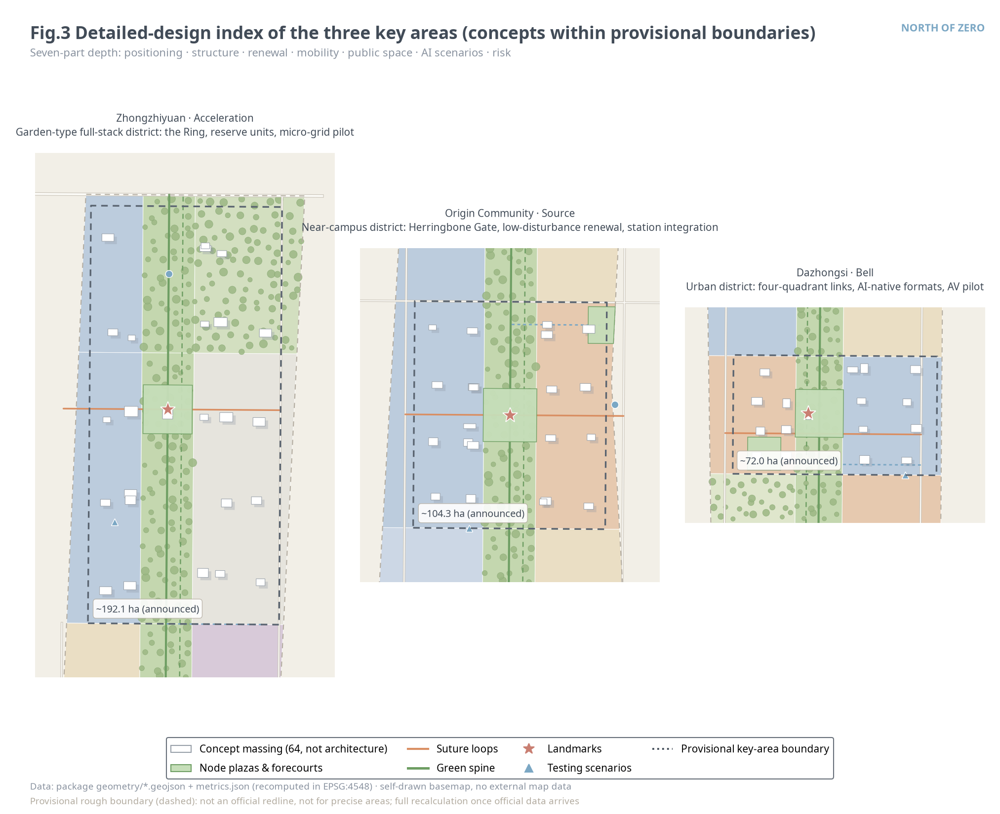
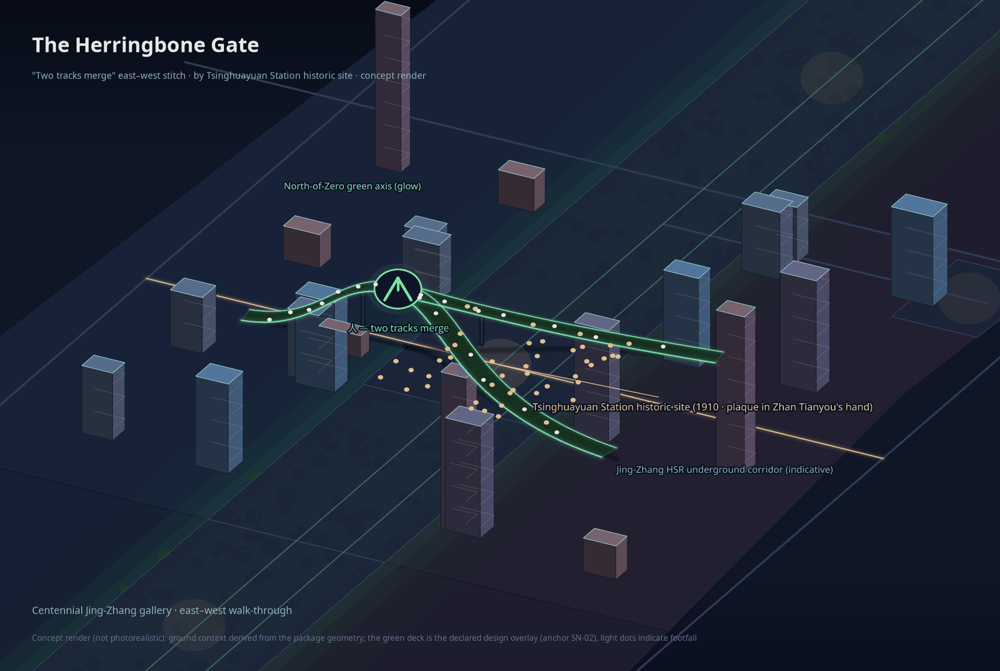
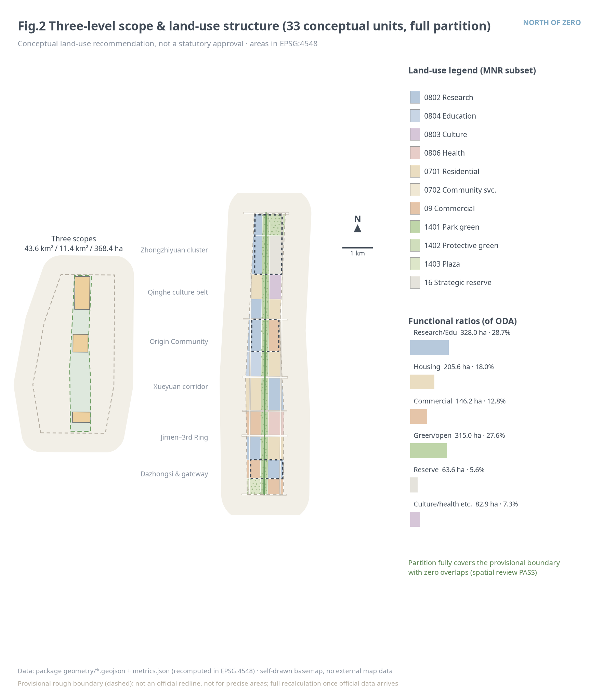
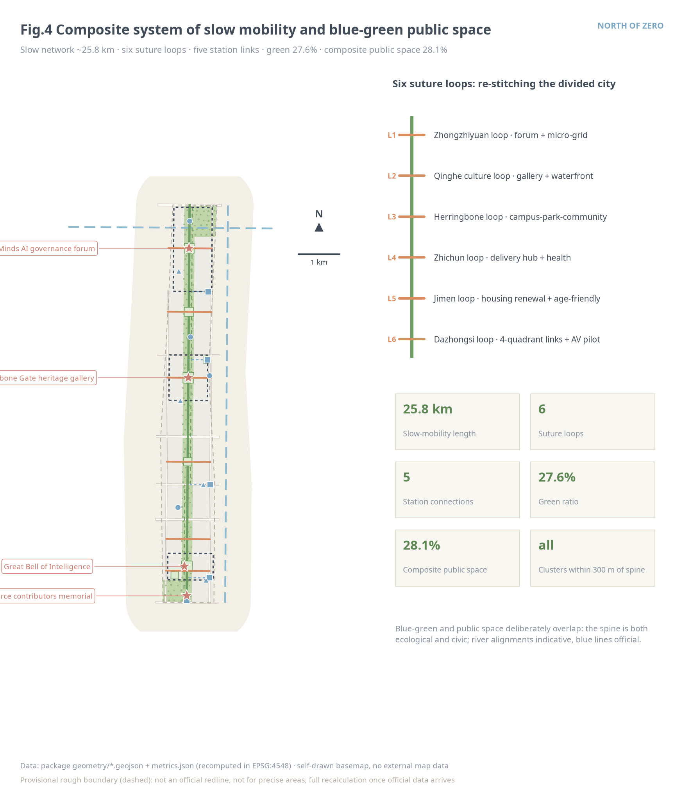
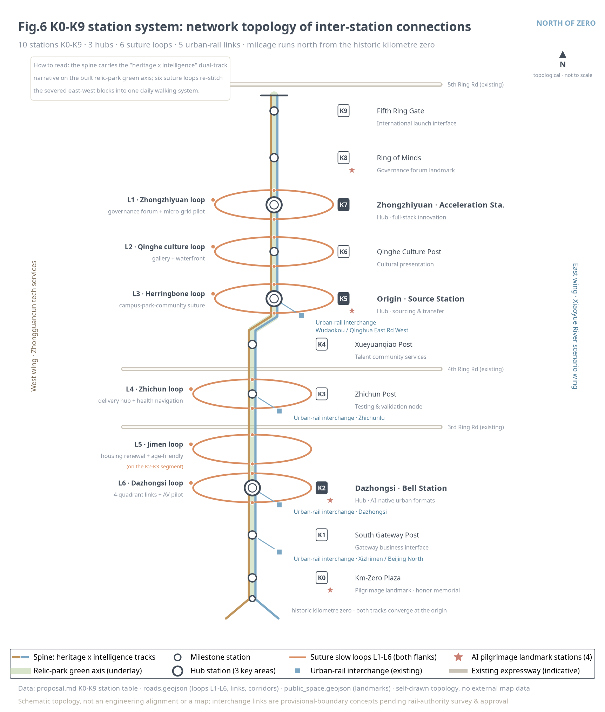
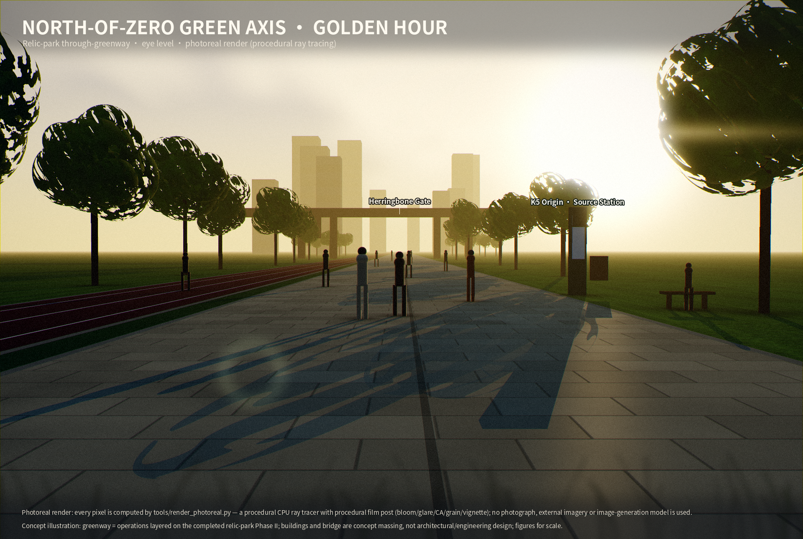
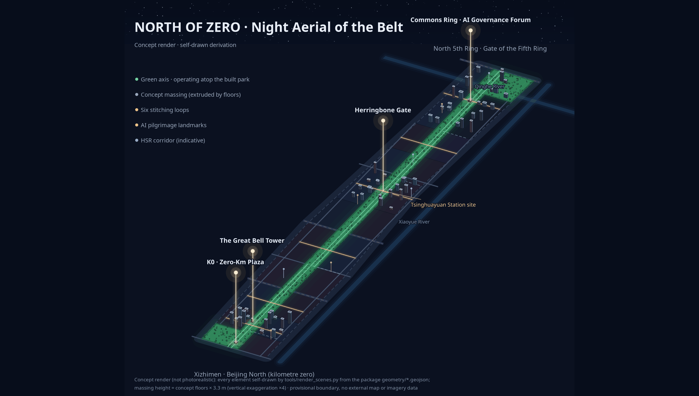
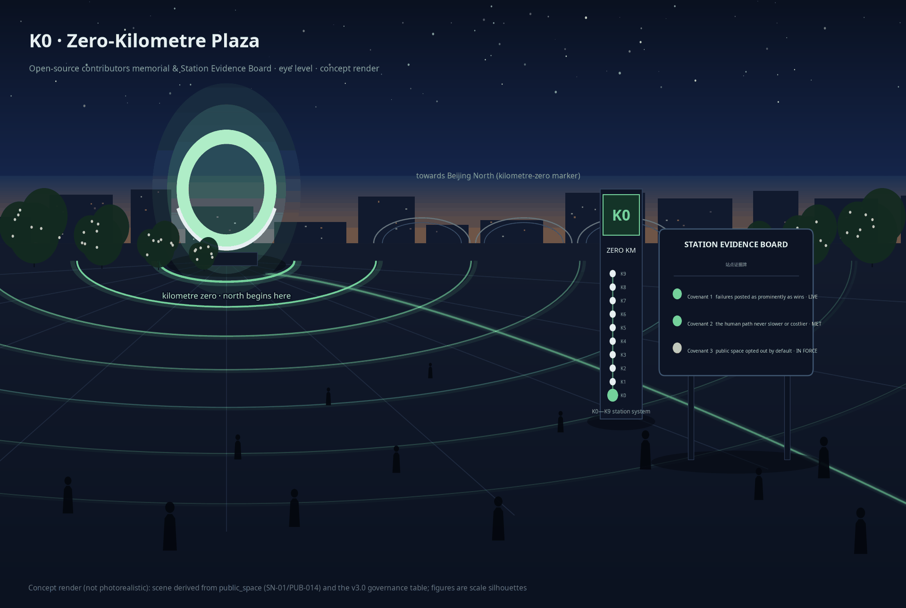

Overview map · Concept (总览地图)
The heritage park is the meridian spine, the three key areas its hubs; six east-west suture loops re-stitch the divided fabric. The herringbone double track (heritage × intelligence) carries the brand narrative; K0-K9 milestones give the naming order.

Three-level scopes (三层范围)
| Level | Area (announced) | Recomputed | Depth |
|---|---|---|---|
| Coordinated Research Area | 43.6 km² | strategic level, not recomputed | industry & future-city research |
| Overall Design Area | 11.4 km² | 11.41 km² (Δ0.11%) | RDP-depth urban design |
| Key-Area Detailed Design Area | 368.4 ha | 369.3 ha (Δ0.24%) | implementation-plan depth |
Key areas · three hubs (重点区域)


Land-use partition · 33 units (用地分区)
Full coverage, zero overlap (spatial review PASS): research/education 28.7% · housing 18.0% · commercial 12.8% · green/open 27.6% · culture/health 7.3% · strategic reserve 5.6%. Conceptual ratios, not statutory approval.

Mobility · six suture loops (交通慢行)
About 25.8 km of walking-cycling network: through-greenway, two cycleways, six suture loops and five station connections. Existing roads shown as indicative alignments, not redlines.



Blue-green public space (蓝绿公共空间)
Green ratio 27.6% (spine + belts + plazas); composite public space 28.1% — the spine is both ecological and civic. River corridors indicative; blue lines official. Four AI pilgrimage landmarks: K0 Plaza, Herringbone Gate, Great Bell of Intelligence, Ring of Minds; a three-tier honor system (wall / bell record / annual exhibition).

Buildings · massing & DRR (建筑)
DRR: retain first, renovate mostly, demolish as exception; block-level conclusions await inventory and tenure data, by professional teams.
AI scenarios · 12 cards + personas + testing (AI 场景)
Six personas; four of the twelve cards are industry testing-and-validation scenarios (▲). One boundary for all: public/authorized data only, no individual identification, on-site anonymized aggregation, human review of consequential decisions, testing ≠ approved operation.
| No. | Scenario | Anchor | Privacy & human review |
|---|---|---|---|
| S01 | Greenway AI companion | Greenway station | Anonymous aggregates, spot checks |
| S02 | Suture smart crossing ▲ | Herringbone loop | Aggregate flow, police review |
| S03 | Robot delivery micro-hub ▲ | Zhichun hub | Fixed routes/hours, safety officer |
| S04 | AI cultural guide | Heritage nodes | History & copyright review |
| S05 | Enterprise copilot | Dazhongsi cluster | Authorized data, human confirm |
| S06 | Health navigation | Health station | No health privacy, human counters |
| S07 | Operations-review agent | Six loops | Anonymous data, human confirm |
| S08 | Agent-native retail | Wudaokou street | Data stays with merchants |
| S09 | Transfer matchmaking | Origin cluster | Public corpora, mutual confirm |
| S10 | Edge compute micro-grid ▲ | Zhongzhiyuan pilot | Facility aggregates, approval |
| S11 | AV shuttle micro-loop ▲ | Dazhongsi pilot | Closed testing, safety officer |
| S12 | Honor & city memory | K0 plaza | Personal consent, auditable |

Renewal projects · 18 items & phasing (更新项目)
| Group | Content | Phase |
|---|---|---|
| JZ-01…08 | Near: hub cores + south gateway (K0 plaza, Herringbone loop, 4-quadrant links, greenway, micro-grid…) | ~2026-2029 |
| JZ-09…14 | Mid: Qinghe culture belt, talent apartments, Jimen renewal, Fifth Ring Gate, delivery pilot… | ~2029-2032 |
| JZ-15…18 | Long: Xueyuan clusters, organic community & age-friendly renewal, health-care cluster, reserve activation | ~2032-2036 |
Phase areas: 416.3 / 356.6 / 368.4 ha; six annual events (Summit, Herringbone Hackathon, Bell-Ringing Day, Run Festival, Scenario Open Day, International Residency). All conceptual.
Core metrics (recomputed, EPSG:4548) (核心指标)
FAR: pending official data (no number displayed). All 33 metrics live in metrics.json with formulas, source files and confidence.
Task coverage 23/23 (任务覆盖)
1.3.1-1.3.3 purposes 1.4.1-1.4.3 scopes 1.5.1.1-1.5.1.2 research 1.5.2.1-1.5.2.5 overall design 1.5.3.required+1-3 key areas agent.1 concept & logo agent.2 ecosystem cases ×6 agent.3 scenarios 12 · personas 6 agent.4 landmarks 4 · components 10 agent.5 double-track narrative agent.6 events 6 · operations loop
Item-level mapping in compliance_matrix.json; five mandatory standards in standard_matrix.json; all 15 depth items complete in design_depth_matrix.json.
Self-check status (自检状态)
deterministic ✓ spatial ✓ (full cover, overlap ≤1 m²) visual ✓ (offline, metric-consistent) professional ✓
Provisional-boundary reminders are expected notices and do not block content review; see self_check.json.
Sources (来源)
- Prequalification announcement (Haidian branch, 2026-05-09) — tasks & area values
- Agent taskbook excerpt (cleared, 2026-05-18) — six tasks & quantitative minimums
- Provisional rough boundary polygons (repository, provisional_only)
- MOHURD urban-design & regulatory-planning measures, MNR land-use guide (local snapshots)
- Generative-AI interim measures, Barrier-Free Environment Law (clause-level references)
- Six global ecosystem cases (background, not verified offline) · fonts & toolchain disclosed
All 22 sources with licenses and use boundaries live in sources.json; formal claims rest only on registry formal-ready sources.
Assumptions & recalculation triggers (假设)
- A-BOUNDARY-001 · provisional boundary; full recalculation on official polygons
- A-KEYAREA-001 · key-area rectangles are fits, not redlines
- A-CONTROLS-001 · FAR/height/coverage conditions missing; no statutory conclusions
- A-EXISTING-001 · no existing-building inventory; DRR stays a principle
- A-ALIGNMENT-001 · roads/rivers/stations are indicative alignments
- A-HERITAGE-001 · heritage control lines pending; approvals govern
- A-CASES-001 / A-OPERATIONS-001 · cases are background; operations are proposals, not commitments